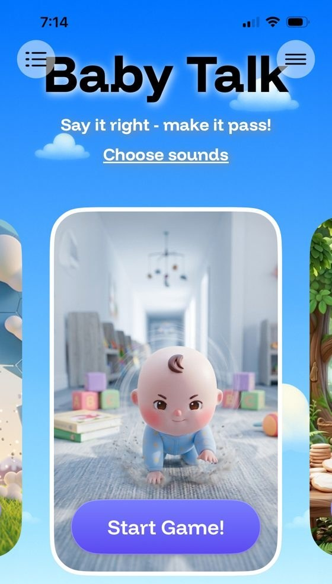
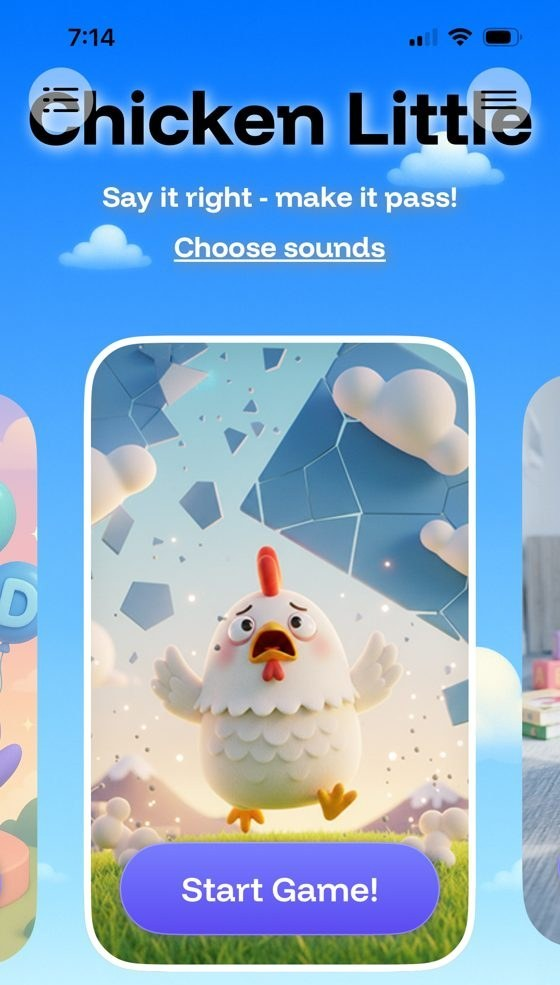

4. Motivating, Purposeful Game-Based Practice
Repetitive drill can be hard for young children to sustain. A review of empirical studies found that gamification generally produces positive effects on engagement and motivation, with outcomes depending on the design and context (Hamari et al., 2014). Studies of tablet-based speech practice games for children have reported high engagement and production gains comparable to traditional paper-based practice (Hair et al., 2021), and computer-based approaches are a growing part of speech sound intervention (Furlong et al., 2017).
In SpeechLP, every game is built around speaking. In Beary Hungry the child feeds the bear by saying the word; in Baby Talk and Chicken Little the child must “say it right to make it pass.” Children can choose which sounds to play with, progress along a visual map with numbered levels and rewards, and celebrate success with animated characters. These elements are designed to increase the number of productions a child is willing to attempt in a session.



Automated feedback on every word. Each practice card shows a pictured target word and automatically plays a spoken model of it, which the child can replay as often as needed before speaking. Automated speech recognition then evaluates the child’s production against the card’s target sound, and a successful production advances the game (Silver et al., 2026). Automated feedback in structured speech practice is an active research area. In a single-case experiment, listener-rated /ɹ/ accuracy in practiced utterances was higher immediately after 30 minutes of AI-assisted Speech Motor Chaining practice than before it (Benway & Preston, 2024), and automated tools for analyzing children’s speech are a growing field of study (McKechnie et al., 2018). In Swedish children aged 4–10, a speech recognition model rated single words within about 5 percentage points of an expert’s own re-ratings on accuracy (Getman et al., 2022), and automated assessment has shown promise in Korean and Mandarin-speaking children (Kim et al., 2025; Lin et al., 2024); none has yet been validated for English home practice. In a single-case study of a self-supervised home speech app, two of four children showed slight improvement on trained words, without improvement on untrained words (Strömbergsson et al., 2026). SpeechLP’s acceptance model has not yet been validated against SLP ratings; that validation is the first planned study, and SpeechLP is working to fine-tune the model, with research results guiding where it needs to improve. Audio is processed on the device and never stored; only text transcripts of what the app recognized are kept.